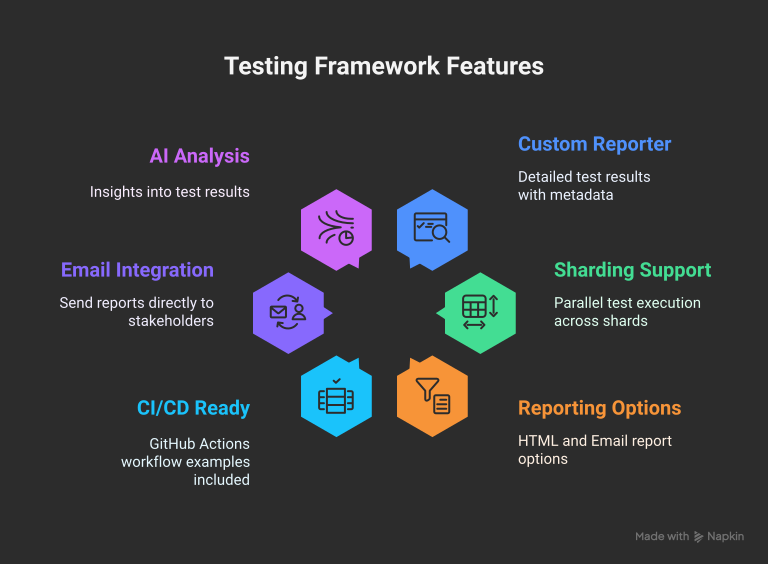

Pytest Pulse — Pytest Report & Playwright Python Report Generator


The ultimate Pytest reporter for Playwright — an interactive dashboard with historical trend analytics, CI/CD-ready standalone HTML reports, and full support for parallel execution and sharding.
Core Features

-
Interactive Dashboard: A rich, single-page
application to visualize test results. Filter by status, browser,
or test name. Expand test cases to see detailed steps (recorded via
@stepdecorator orpulse_stepfixture), errors, console logs, and attachments. - Historical Trend Analysis: Automatically archives test runs to track performance over time. View trends for test volume, pass/fail rates, and execution duration.
- Standalone HTML Reports: Generate fully self-contained HTML reports with embedded attachments (screenshots, videos), perfect for sharing and CI/CD artifacts.
- Emailable Summaries: Automatically generate and send lightweight email reports with key statistics to stakeholders.
- Full Sharding & Parallel Support: Natively handles distributed test execution (pytest-xdist) and can merge reports from all shards into a single, comprehensive report.
- AI-Powered Analysis: Provides insights on test flakiness, performance bottlenecks, and failure patterns directly in the dashboard.
Installation
# Using pip
pip install pytest-pulse-reportInitial Configuration
Add the reporter to your pytest.ini file or pass it as a CLI argument.
pytest.ini for a clean setup that applies to all test runs.
# pytest.ini
[pytest]
addopts =
--pulse-report
--pulse-output-dir=pulse-report
--pulse-description="Pulse E2E Validation Suite"
--browser chromium
--screenshot on
--video on
--tracing on
Ensure you have pytest-playwright installed for browser-specific features.
Generating Your First Report
-
Run your tests: Execute your pytest tests.
pytestThis command will run your tests and the Pytest Pulse Reporter will automatically collect data in the background, creating a
pulse-reportdirectory. -
Generate the HTML report: After the test run is
complete, use the provided CLI command to generate the interactive HTML
file.
generate-pulse-reportThis creates a self-contained static file named
playwright-pulse-static-report.htmlinside thepulse-reportdirectory. - View your report: Open the newly generated HTML file in your browser to explore the dashboard.
Next Steps
Now that you have your first report, explore more advanced features:
- Step Recording Guide: Learn how to
use
@stepandpulse_stepto organize your tests. - Reporters & Scripts: Discover the full potential
of
the
generate-pulse-reportandmerge-pulse-reportcommands. - CI Sharding: Scale your tests across multiple nodes and merge results seamlessly.